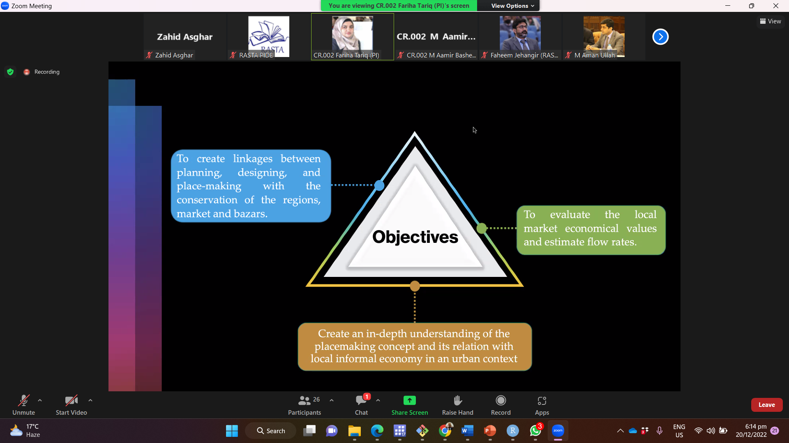
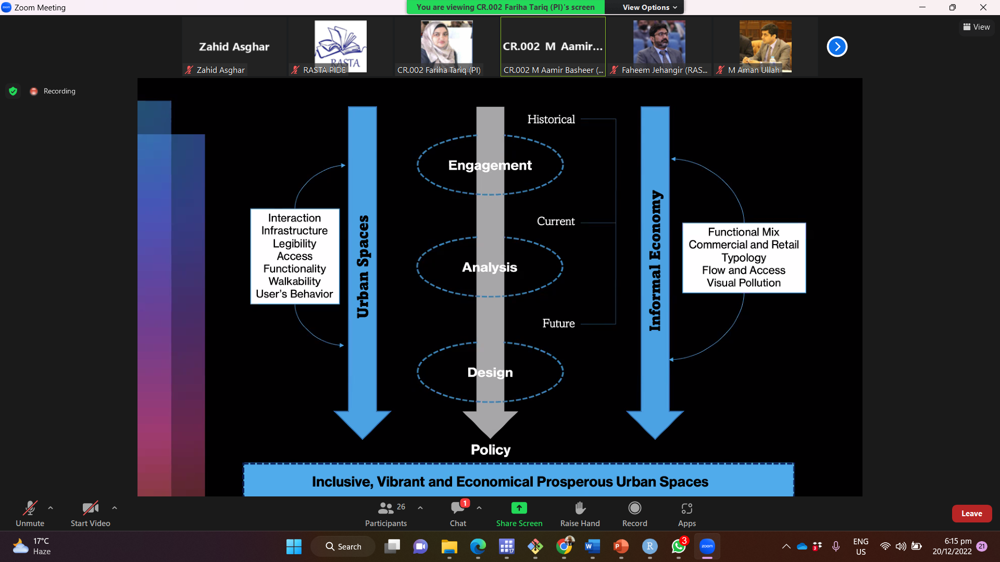
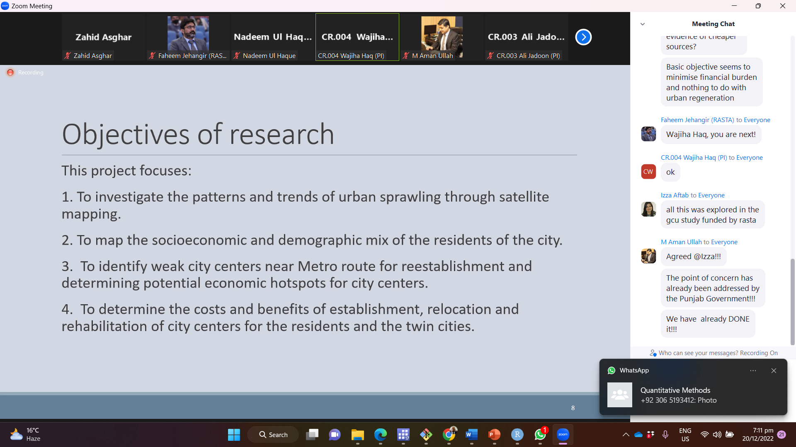

Cities Regeneration
DDR
DDR.CR-002
What do we mean by public spaces here? For whom we are talking about public spaces? Is it youth aged, working population, women, students Civic outlook Place to relax to enjoy? What is concret in the proposal? NY and New Zealand : What single or two public spaces one is talking?
Its too broad in scope and how will all this be achieved in one proposal.
What do we mean by street economy? Karachi company, Jinnah Super F-7, Liberty Lahore…
Objectives : How will these be achieved?


Too many things are discussed
Transport,
Informal economy
Walkability
Making roads as economic hubs
Safe roads
Design:
Little on how to achieve all this
How will this represent whole of Lahore
DDR.CR-003
DDR.CR-004 Wajiha Haq
Very general without any concrete research ideas

DDR.CR-005
All based on generic and highlighting co-PPGIS nothing concrete regarding regeneration of Pakistani cities.
DDR.CR-006
Kashmore Jacobaad Railway